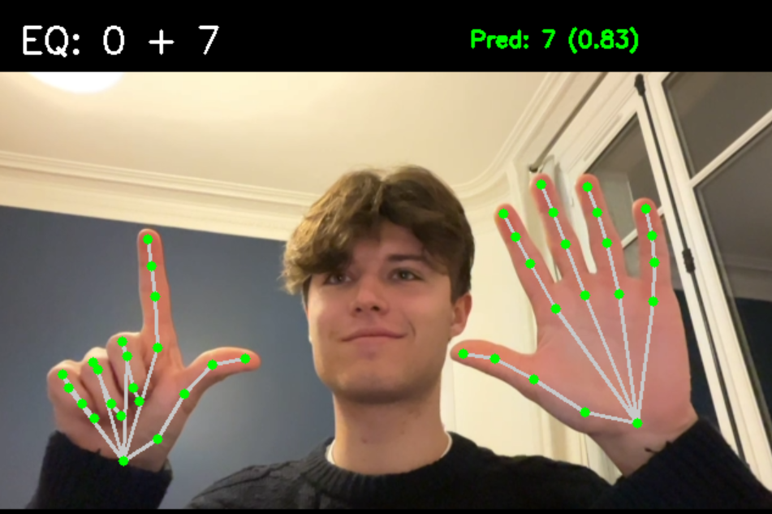

NeuroCalc is a real-time hand gesture recognition system that interprets arithmetic operations (digits 0–9 and operators +, −, ×, ÷, =) performed with both hands in front of a webcam. The hands are modelled as a dynamic graph of 42 vertices extracted by MediaPipe, projected into a canonical rotation-invariant reference frame, and classified by a Spatio-Temporal Graph Convolutional Network (ST-GCN). The system reaches 93.65% validation accuracy on a custom 15-class dataset and runs at 30 FPS on CPU thanks to an asynchronous strided inference engine that reduces compute load by approximately 75%.
This project is my second time tackling an image/video ML model. In my previous project, I used a standard CNN with a public dataset to recognise characters on a licence plate. Standard Convolutional Neural Networks struggle with dynamic hand gestures due to high variance in camera distance and orientation. I wanted to explore a fundamentally different approach: treating the hands as a graph rather than a grid of pixels.
By projecting the data into a canonical reference frame before it reaches the neural network, I drastically reduced the complexity of the learning manifold. I also built my own dataset from scratch — 21 videos per character across 15 classes (digits and operators) — to have full control over the training distribution and to practise the end-to-end ML pipeline.
Raw coordinates are sensitive to the user’s position, so the Geometric Kernel anchors the coordinate system to the dominant hand’s wrist using Gram-Schmidt orthogonalisation. This canonicalises the dual-hand topology into a rotation-invariant manifold, effectively decoupling the semantic gesture from the user’s global orientation.
To capture semantic relationships between unconnected joints, the network uses an Adaptive Graph Convolution layer that can “invent” new edges beyond the physical skeleton. This lets the model learn cross-hand relationships (e.g., both index fingers touching for “=”).
Temporal evolution is handled by interleaved TCN blocks with dilated convolutions. These give the network a wide receptive field over time, which helps distinguish between static digits and dynamic signs like “Minus” (a sweeping motion).
To maintain a smooth 30 FPS UI, the inference engine runs the ST-GCN on every N-th frame in a background thread, reducing CPU load by approximately 75% while the main thread continues rendering the webcam feed and overlay.
cd neuro_calc poetry installpoetry run python tools/recorder.pypoetry run python train.pypoetry run python inference.py